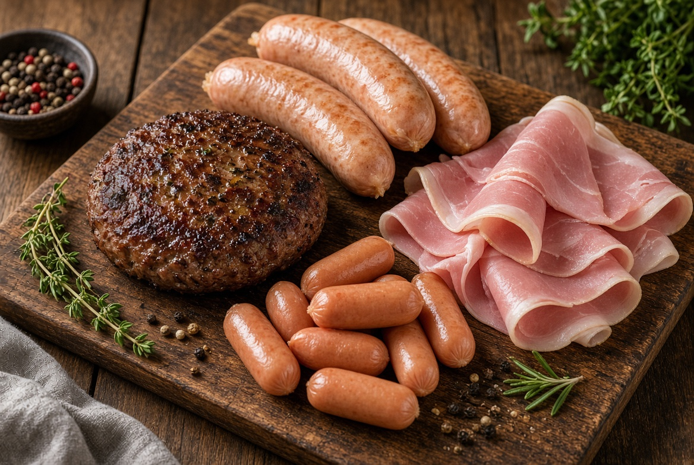
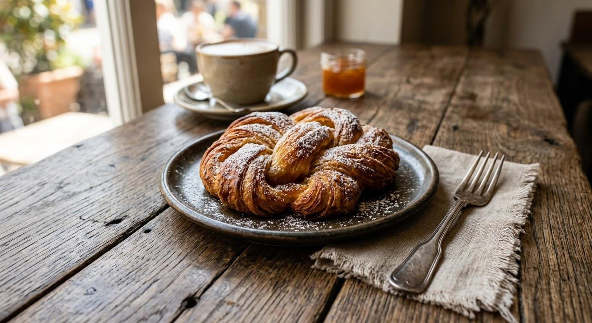
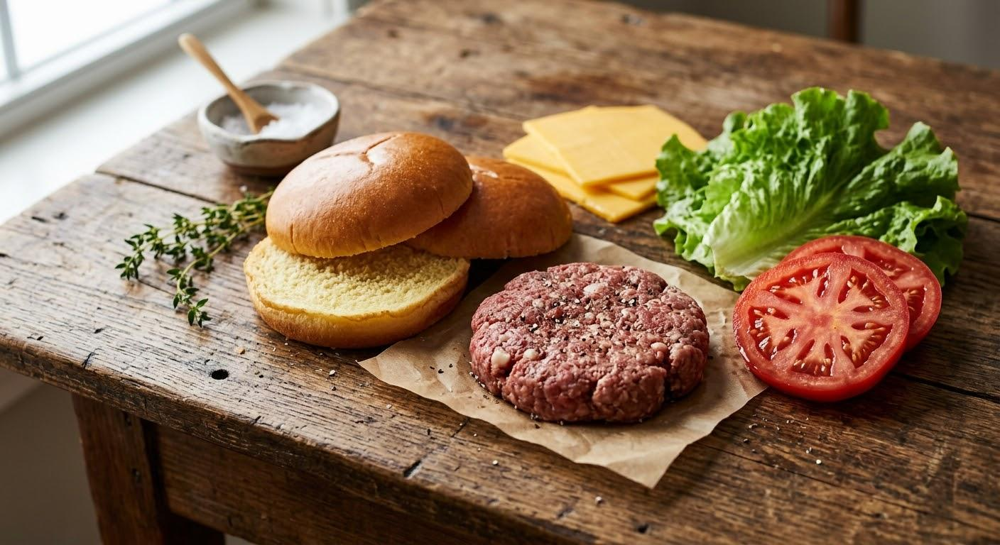
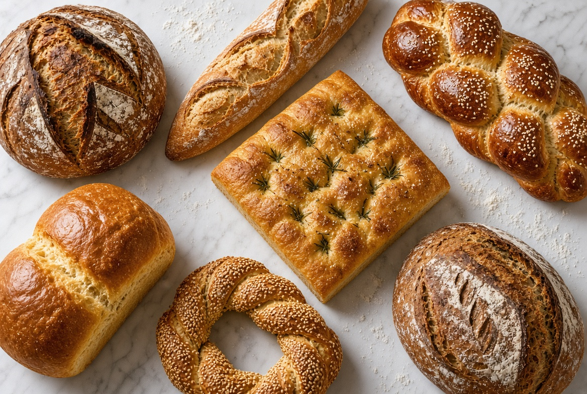
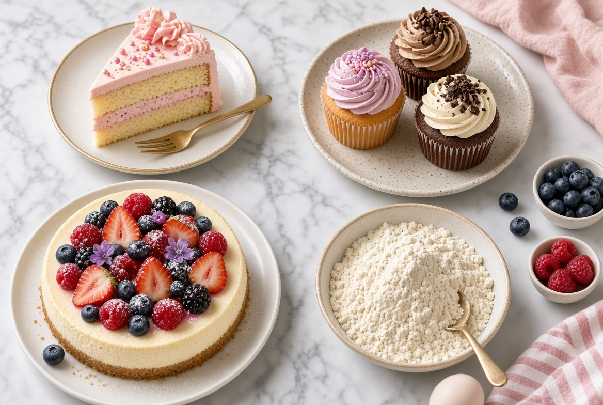
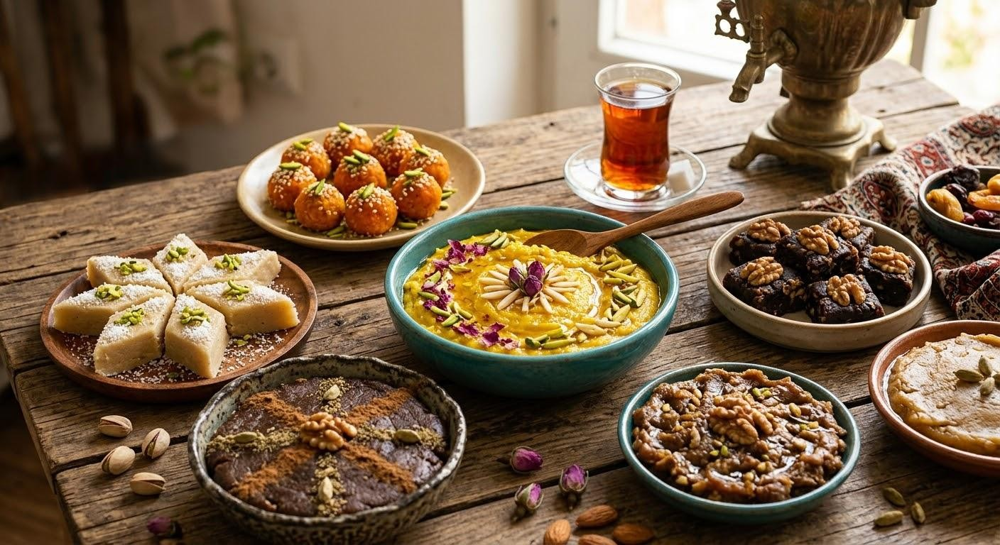
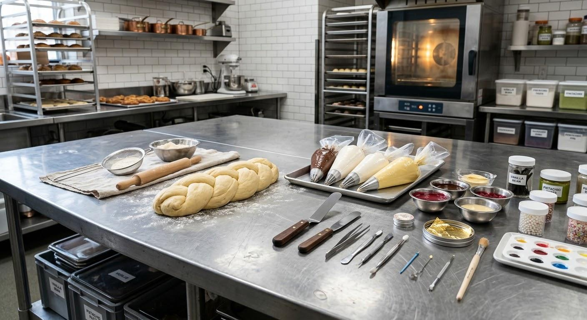
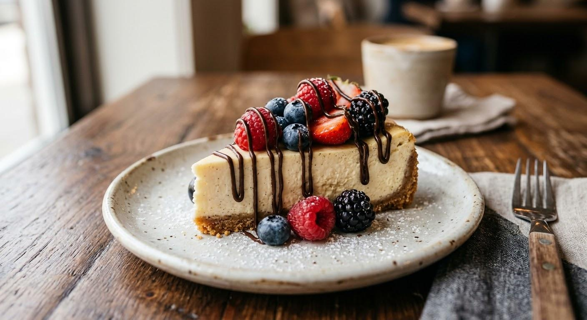
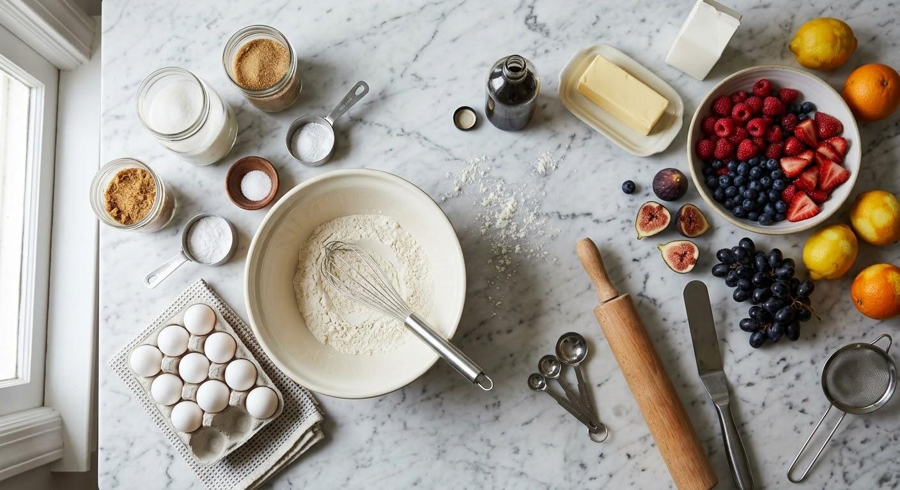
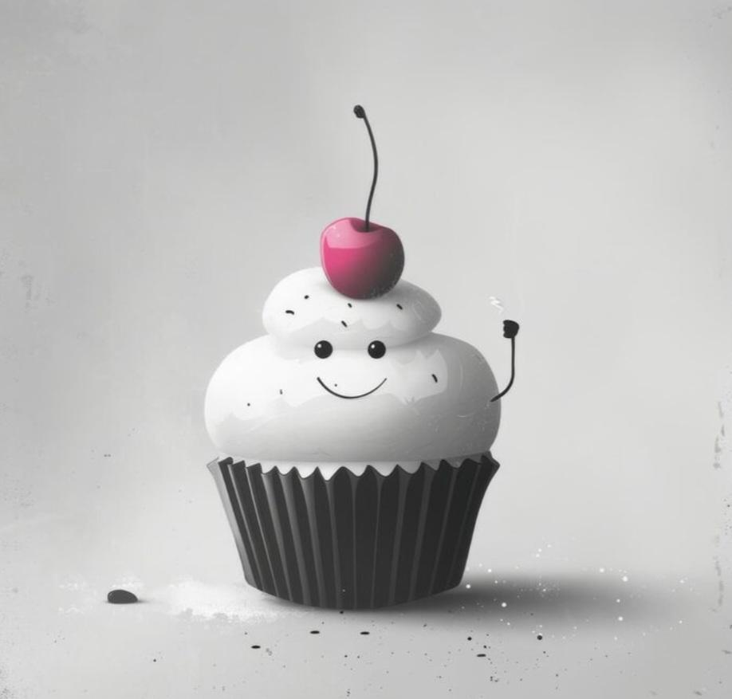

۰۱ · فرآوردههای گوشتی
دهکده پروتئین
همبرگر، سوسیس، ژامبون، کوکتل و سس و چاشنی؛ از انتخاب مواد تا پخت حرفهای.
مشاهده دوره ↙از دهکده پروتئین و نانهای حجیم تا کیک، شیرینی و انواع حلوا؛ قدمبهقدم یاد بگیر، تمرین کن و طعم خودت را بساز.


مسیرت را انتخاب کن؛ بقیهاش با تمرین و اشتیاق تو ساخته میشود.

همبرگر، سوسیس، ژامبون، کوکتل و سس و چاشنی؛ از انتخاب مواد تا پخت حرفهای.
مشاهده دوره ↙
از نان تست و باگت تا بریوش و نانهای مغزدار؛ بیش از ۳۰ نوع نان حرفهای.
مشاهده دوره ↙
انواع کیکها، کیکهای کافیشاپی و انواع شیرینی و دسر.
مشاهده دوره ↙
از حلوا کفگیری و زعفرانی تا حلواهای مدرن مثل نوتلا و اسنیکرز.
مشاهده دوره ↙هر مسیر از شناخت مواد اولیه شروع میشود؛ تکنیکها را ببین، تمرین کن و نتیجهات را ارزیابی کن.
برای انتخاب دوره راهنمایی بگیر ↗
دانش با طعم تجربه ✳ما آموزش را به قدمهای قابل انجام تبدیل میکنیم؛ با توضیح روشن، تمرین هدفمند و توجه به جزئیاتی که نتیجه را متفاوت میکنند.

شیرینیپزی
تکنیکهای پایه
ایده و خلاقیتبرای راهنمایی انتخاب مسیر آموزشی، اطلاعاتت را وارد کن.